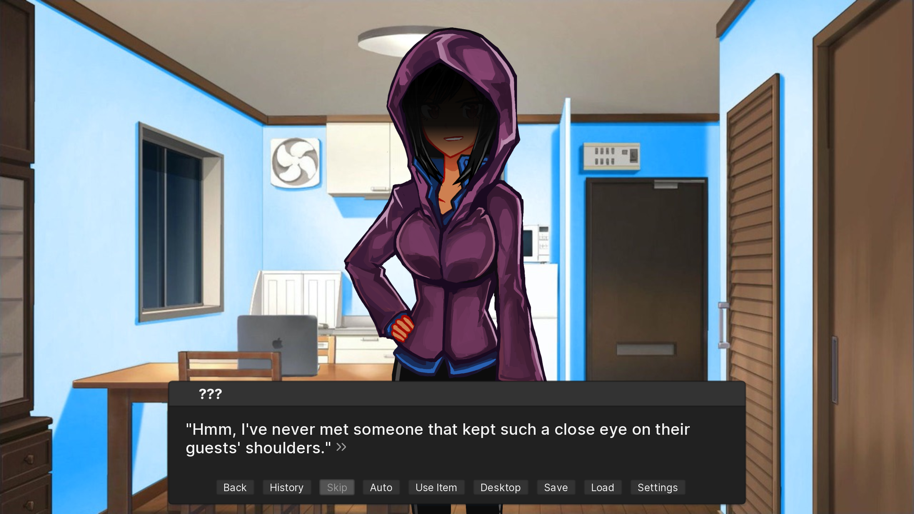
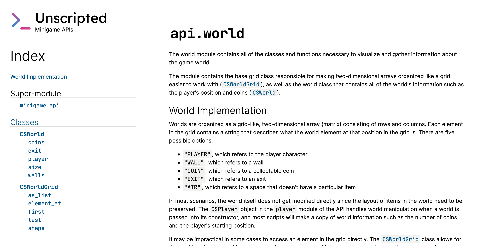

Hey everyone,
It's been a while since my last update to the demo was released (about a month or two, I believe), and I haven't released much since then. However, there are a couple of things I'd like to tell you all about what's been going on with Unscripted the past few months.
A new character steps forward
After publishing the demo, I went to work into writing more of the full story with multiple routes. Unfortunately, I was kind of a bit struck with writer's block and needed to find a solution before starting to lose interest. Luckily, I figured out a solution that I think this visual novel deserves: a new, fourth character.

As of a week ago, I teamed up with Raseruuu, the game's sprite artist, to bring her to life into the game. This new character, "Meredith" (legal name), is the first non-programmer in the game and has a unique personality that I think you'll all love learning more about as much I have been writing for her!
It's Rush Drawing time!!
— Zan Kizuna @SoftWar (@Raseruuuuu) March 24, 2020
new sprite for Unscripted VN
I need that commission money uguu, salary hasn't come uwaaahttps://t.co/eMFqIvvuxC pic.twitter.com/b465RRWMtZ
Expanding the minigame
I knew that I wanted to add more to the minigame that Unscripted offers. For those that may not be familiar, Unscripted includes a minigame in which you control Mastina, a mastodon, through a world, collecting coins in the process. The minigame currently uses a set of buttons that a player clicks in a specific order to solve the puzzle, but I know that I personally would prefer to have the flexibility of writing a script rather than entering one in manually with a user interface.

Enter the Unscripted Minigame API. The Minigame API is part of a bigger chunk of the minigame's advanced mode where players can write Python scripts to solve the puzzle instead of using the buttons. This should give experienced (and new) players/developers the flexibility that Python offers while allowing players to write sensible code and interact with the minigame that wouldn't be possible otherwise. I've also been working on writing some solid documentation that explains the API in great detail and everything you need to know to write great scripts to solve puzzles.
So... extended demo?
There's been a really fun playthrough of Unscripted's demo that I've watched, and the YouTuber, Cryptic Hybrid, brought up the question of possibly releasing an extended demo. After some thinking and working on the new character and advanced mode of the minigame, I will probably release an extended demo. The demo will come as a traditional feature update to the game, and it will probably include the following:
- More chapters available to where all characters have been introduced. This will let players meet each character, especially the new addition to the team.
- Some minigame puzzles, with the advanced mode ready.
- New iconography for the app on Windows and macOS that best represent the platforms they're running on.
- A new start screen for a new game that lets you choose your programming language and pronoun preferences in addition to your name.
- (Possibly) Some scenes with CGs. Because they're always fun!
I hope to keep up with the dev-logging and let you know more about Unscripted as I keep developing it. Cheers!
- Marquis